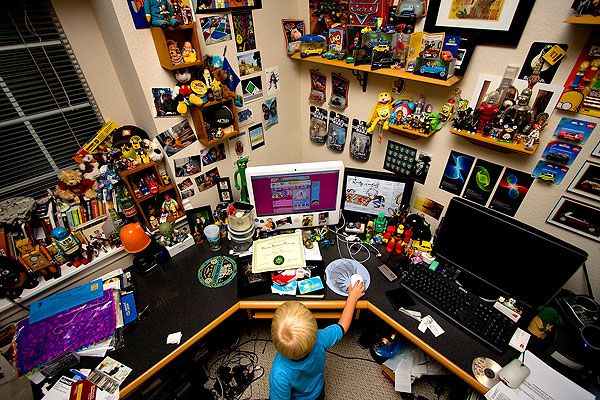

Setting Yourself Up For Success
“For every minute spent in organizing, an hour is earned.” – Unknown

What does your work / study / desk area look like? Does it feel open and relaxing? Or, like the image above, does it feel kind of crowded (and stressful?). Is there even an area in existence that you would consider to be a “work-only zone?” Do something really quick for me. Take out four pieces of paper and put them together (in any combination… square, long ways, etc). Using any layout, can you put these four pieces of paper together in any one area of your desk? If not, then it’s probably time to do some cleaning (or, your desk is really really small, which is okay too). I used to have a pretty crowded desk, and without me knowing it my productivity suffered. Each and every piece of “debris” is a distraction (no matter how little it is). How many distractions are on your desk?
One thing you should do before you start learning Japanese is create a great environment for learning / working. Like I keep saying – I don’t want you to quit, no matter how you end up learning Japanese. The first thing you have to ask yourself is “where will I study Japanese?” For the most part (unless you need to mix things up a bit, but we’ll get into that at some point later on) you’ll want to create a great study space for yourself, and associate “getting things done” with that space. For example, sitting in front of the television might be a tough place for you to study, because your brain has already associated that place with watching television.
Task Decide what space is your “Japanese Study Space.”
So, why are we doing this? Do you know the difference between “productivity heroes” and “everyone else”? Honestly, it’s not much. In general, most people (believe it or not) have a similar amount of self-discipline. Let’s think of the amount of self-discipline you have as “SD points.” Let’s also assume everyone has approximately 100 SD points. If you use all your SD points in a day, then you have no more self-discipline. You can no longer do things you’re supposed to do (surprisingly, this is actually really close to how it actually is… think about it next time you use some SD points out there in real life!).
Now, the difference between productivity heroes and everyone else isn’t that they have more SD points. It’s that they don’t use the SD points they have when they’re doing a lot of things that normally use those SD points up. How do they do that? They make things into rituals and traditions. To apply this concept to Japanese and this chapter (which is about your work space), someone who is a productivity hero would say “when I sit in this space, I study Japanese.” Or, they might say “when I get home, I study Japanese.” Take note how it’s slightly different from “when I get home, I will study Japanese.” It’s something you do… no, it’s something you always do. It’s not a task, it’s a ritual. Rituals and traditions don’t take up SD points.
So, when you’ve decided on your “Japanese Study Space” (wherever that might be) I want you to start thinking about traditions as well.
When you sit here, you study Japanese.
When you come home, you study Japanese.
When you finish dinner, you study Japanese.
No questions… no ifs… no buts… it’s what you do. Decide right now on one or two traditions like this. It won’t be a tradition today, but if you do it enough it will become a tradition. It will also make Japanese studies a hundred times easier, especially on days where you’re running low on SD points :)
Also, a side-note. In your special space for learning Japanese, you should avoid other distractions as well. It’s best to:
- Avoid music, movies, etc., while you’re studying. I don’t care who you are, multitasking isn’t a good way to learn something (quickly).
- Try to only study Japanese here. I understand if it’s a multi-purpose area, like a desk, but the more you can associate Japanese learning with this area, the better!
- Don’t allow yourself to get on Facebook, Twitter, Farmville, etc., while you study. At the very least, wait until you’re between things!
- Turn any notifications off on your computer / phone (this includes e-mail, Twitter, text messages, and so on).
Finding a great place to study is going to be easier for some of you and more difficult for others. The main thing is that you try to pick a nice spot to study at. This spot might even be at a particular coffee shop. Feel free to be flexible. Just try and be consistent!
And remember… make that spot part of your ritual. Your SD points will thank you for it!